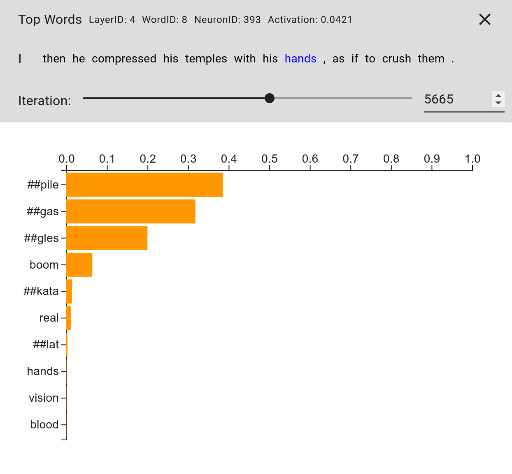
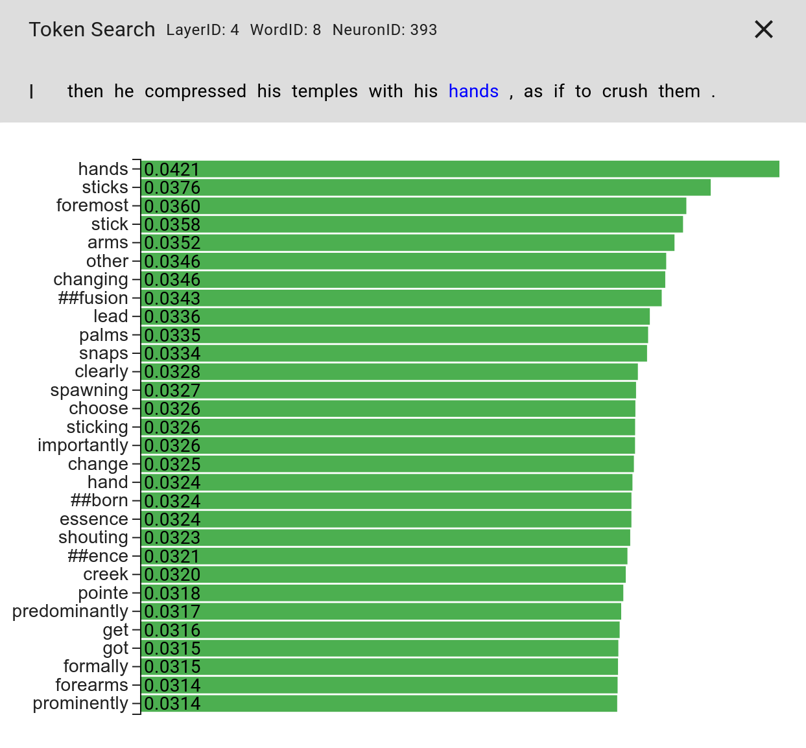
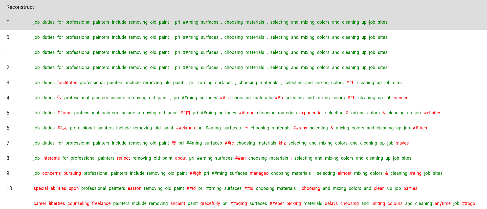

What does BERT dream of, and how can we interpret
it?
A visual investigation of nightmares in sesame street, by Alex Bäuerle, James Wexler,
and Martin Wattenberg.
DeepDream, which has been intensively studied for neural networks for image data, aims at providing explanations for what individual neurons react to.
It changes the input to the network through gradient decent, with the goal of maximizing the activation value of neurons in these networks.
This can be thought of as similar to the initial training process, where through many iterations, we try to optimize a mathematical equation.
But instead of updating network parameters, DeepDream updates the input sample.
What this leads to is somewhat psychedelic but very interesting images, that can reveal to what kind of input these neurons react.
We wanted to know how BERT reacts to different inputs.
BERT is a model for natural language understanding.
It can be used for tasks such as sentiment analysis or next sentence prediction.
In another blogpost, (link emilys work) investigated this using corpus search.
They searched for sentences that highly activate certain neurons of the network.
As this provided some promising results, we wanted to see if we can get even better with dreaming.
When dreaming for images, the input to the model is gradually changed.
Looking at a single pixel in the input image, this could be a slow change from green to red.
The green value would gradually go down, while the red value would increase.
Language, however, is made of discrete structures.
Thus, there is no such gradual change to be made.
We can, for examlple, not slowly go from the word "green" to the word "red", as everything in between does not make sense.
We therefore have to use a little trick.
The trick that worked best for us (later you will see that best does not necessarily mean perfect in the realm of deep learning), is called the softmax-trick, and has already been used in a paper from 2018 by Poerner et. al..
This trick allows us to soften the requirement of dicrete tokens, and instead input a linear combination of tokens into the model.
To assure that we do not end up with something crazy, it uses two mechanisms.
First, it constrains this linear combination to in its sum only consist of one token.
This is done by taking the softmax function over this smooth input distribution, i.e. $softmax(soft_token_distribution)$.
This, however, still leaves the problem that we can end up with any linear combination of tokens that sums to one, including such ones that are in between real tokens.
Therefore, we also make use of a temperature parameter.
Before applying the softmax function, we divide our token distribution vector by this temperature.
Dividing by large temperature values means that the softmax result will be even more smooth, whereas dividing by very low temperature values results in a more spiky softmax function.
We want the model to be able to first explore different linear combinations of tokens, before having to decide on one token.
This can be done by slowly decreasing the temperature alongside the dreaming process.
What are BERTs dreams like?
Now that we know how DeepDream can be used in combination with text models, how do those results look like?
Well, very unpredictable.
Fore some neurons, it is possible to produce sentences that highly activate them (baseline always being the the results from corpus search).
However, other neurons to not give us these results at all.
There are different options of which words to be changed by the model.
We always keep the CLS and SEP tokens static.
CLS is a spectial classification token used by BERT for some downstream tasks, while SEP marks the end of a sentence.
When we allow the model to change these tokens as well, it seems to be confused and the approach is likely to fail.
In between those, one can change anything from one word to the whole sentence.
When changing single words, the model often finds one that leads to a high activation, but not always.
For whole sentences, the sucess rate is slightly reduced to something around 50% in our experience.
In the first place, this was surprising to us.
This method uses gradient decent and seemed to work for other models (see Poerner et. al. 2018).
However, BERT is a complex model, arguably much more complex than the models that have been previously investigated with this method.
Nonetheless, we wanted to sanity-check our approach, but more on that later.
So, why is BERT such a bad dreamer?
This is a question we try to answer PAIR-style, by providing explainability tools to visually inspect those dreaming results.
We built visualization tools that allow users of Deep Draeming with text to investigate their dreaming processes.
We use them to reason about our approaches with BERT, but if you run into similar problems, feel free to use them with any model.
All these tools are publicly available on GitHub.
Visualizing the dreaming process
The first question we wanted to answer for these dreaming processes is how the input representation evolves over said process.
Here, it is interesting to look at when and how the model replaces certain words in the input.
At the same time, we want to see how the activation value of the neuron we are trying to maximize is evolving alongside the change of temperature which we use to force the model to pick real tokens.
Additionally, we compare the evolvement of this activation value to the activation we would get if we were to ignore the linear combination of tokens that we obtain using the softmax-trick, and insted snap our input to the top ranked tokens of the softmax function.
The visualization of this process can be seen in Figure 1.

Figure 1. Visualization of the dreaming result over iterations. We skipped some iterations in the middle for simplicity. In the beginning, the model can use linear combinations of embeddings to get a high activation value (dark green). As the temperature (blue) loweres, the model has to stick more to real tokens and the activation and activation of actual token ids (light green) gets closer. In this run, the model succeeds in dreaming to a higher activation (0.0436 vs. 0.0570).
As you see, this is not a valid english sentence anymore.
What was more concerning, however, is that while this is an example for a successful run, we were not able to consistently get back to the same or a higher activation than what we started with.
We always started with top 10 sentences from corpus search as a baseline, as this approach has a lot more freedom to change words and thus should be able to get to higher activations.
This is something we wanted to investigate further.
To look at these processes and what might go wrong here, we made the problem easier by having it only change one word in the input sentence.
We did this to check if it would still not always be able to reach high activation values, and while the probability of getting to a high activation value increased, it still did not work out all the time.
We had some ideas about that, which we wanted to investigate further:
-
Temperature annealing seems to first, allow the model to pick any linear combination of tokens, before gradually reducing the number of tokens used for this linear combination.
What if some tokens get removed from the combination but would highly activate the neuron in isolation?
-
What if the model is so specialized, that its neuron is really interested in the token walk, but everything arounf that token is not activate the neuron very much? This would make the optimization problem with gradient decent very hard.
Visualizing the annealing process
To investigate our first idea for why BERT might have problems with getting good sleep, we want to see how the annealing progresses.
What is especially interesting in this case, is how the softmax distribution over the token space changes throughout the process.
We thus developed a visualization that helps us investigate this distribution for different iterations.
In Figure 2 we see that the model uses a linear combination of tokens at this step.
Interestingly, the token "hands" has a very low value.
If we went on, we could see that the model rules out more tokens and in the end is unable to swap back to hands to get a higher activation.

Figure 2. Visualization of the softmax diftribution that is used for getting a linear combination of embeddings to feed into the model.
The length of the orange bar indicates the weight assigned to the token to obtain a linear combination of embeddings.
It is also interesting to look at this in combination with the top activations for a specific word position.
We can do that by simply checking the activation for each word in the vocabulary, and visualizing that as well.
You can see that in Figure 3.
One thing that this reveals is that "hands" is indeed the most activating word in for the investigated neuron, given this sentence.
Interestingly, none of the tokens that have high weights in the linear combination of tokens to input into the model can be found in these top activating ones.
This shows one possible problem with this training method.

Figure 3. Showing the words that most highly activate the neuron. The word that is swapped for these is marked in blue in the sentence.
These insights support our theory that sometimes, the annealing process removes highly activating tokens from the set of tokens that can be selected by the dreaming process.
Visualizing similar embeddings
Another concern for why this method is not always leading to desired results is, that the optimization problem is hard.
A reason for this could be, that the models neuron are highly specialized on certrain tokens, while all the tokens around it might not activate the neuron much.
To get an idea about that, we developed another visualization that allows us to look at activations for tokens that are close to the token we know higly activates the neuron.
In Figure 5, you can see an example for this visualization.
We see that words for which the embedding is similar to the word "for", which we know produces a high activation, do not also activate the neuron that much.
In fact, none of the words in this visualization except "for" would be in the top-thirty most activating words if we were to look at the token search visualization for this example.
This could be an indication that some neurons are so specialized, that it gets extremely hard to find optima using gradient decent, and might indeed be another reason for why these dreaming approaches sometimes fail to produce the expected results.

Figure 4. Tokens that are most similar to the token highlighted in blue.
Similarity is computed as distance (grey) in embedding space.
Activations (green) of those tokens reveal that similar tokens do not necessarily lead to similar activations.
Reconstructing activations
I mentioned something about sanity checks earlier, and while we had some ideas why this might fail in some occations, we wanted to make sure that we did not make a conceptual error.
Luckily, the approach we used for deep dreaming can also be used to conduct other experiments than just activating neurons.
To make the problem that our optimizer has to solve a lot easier, we try to reconstruct activations insted of maximizing them.
Additionally, instead of looking for single neurons, we want to reconstruct the activation for the entire layer.
To do so, we feed a sentence into the network, save the activation for a specific layer, and then use the same technique of changing the input to the network.
This time, the optimization target is to minimize the difference between our saved activation and the input to the network.
To start this process of, we use a random input sentence with the same length as the target sentence.
The results for such an experiment can be seen in Figure 5.
We use the same sentence for every layer, to see how this unfolds in different stages of the network.
Surprinsingly, these experiments seem to work comparably well.
What is even more interesting, this does not only indicate that our approach has no conceptual flaws, but reveals additional insight into the workings of BERT.

Figure 5. Reconstruction visualization.
Green indicates correctly reconstructed tokens, while red sybmolizes tokens that could not be correctly reconstructed.
The topmost sentence is the sentence with which the target activation was obtained.
All the other sentences are results of the layers in BERT.
One insight that we get from visualizing these experiments, is that is seems to be easier to completely reconstruct the activation for earlier layers.
Layers that take on later processing steps are consistently harder to reconstruct.
Another interesting analyzation is too look at which words get replaced in each of the layers.
In this example, we can see that connections such as the word "for", commas, and the word "and" seem to get replaced with seemingly random words relatively early.
As these words are not really important to understand the general meaning of the sentence, them being less important for the reconstruction of activation results seems just natural.
Other words, such as "duties", "include", and "reflect" are replaced by conceptually similar words, such as "interests", "reflect", and "venues" in some of the layers.
These replacements could sometimes even be considered drop-in replacements that preserve the overall meaning of the sentence.
This is in line with the general assumption that such models first look for fine-grained structures and details in the input, before moving to the recognition of more general concepts.
Interestingly, some words are consistently reconstructed across all layers.
It seems like these words are especially important for the network to understand the sentence.
This indicates that for some tokens, the exact representation is of great importance for understanding the sentence, while other can be replaced without as much loss of information.
All in all, this experiment provided more insight than we initially expected, which led us to build on this, and try something similar.
Changing activations for reconstruction
Bias is a problem in many neural network applications.
This leads us to the question: If reconstructing activations works, what happens if we change some activations?
To investigate conxeptual bias, this change needs to be directed.
Performing such changes can be done with some preprocessing.
First, we gather sentences for two concepts we want to test bias for.
Then, we feed all these sentences through the network, and save the activation value for the concept-word in each layer.
This gives us representation of both concept per layer.
To then find a direction to reasonably change the activation we want to reconstruct, we use Concept Activation Vectors (CAV).
We train linear classifiers between activations for both concepts.
The vector that is orthogonal to the classification boundary can then be used as the direction to change the activation in.
To follow this idea, we used a corpus of sentences containing male and female pronouns, namely "he" and "she".
After obtaining the CAV for these concepts, we use the same approach of reconstructing activations as before.
The only difference here is, that the activation that is to be reconstructed gets changed before the reconstruction process.
To be more precise, we change the activation that re retrieved for a sentence at the position of a pronoun.
The activations of all the other tokens are kept the same.
One can see the results of such an experiment in Figure 6.
Remarkably, in this case not only the token we changed the activation for changes, but also tokens that we did not touch at all.
Even more exiting, the token "her" actually changes to "his", which matches the direction we shift the pronoun token into.
Thus, even though we only change the pronoun, this is so important for the model, that other tokens can be changed on this basis.
On the other hand, we were not able to find even stronger indications of bias, where for example, the model would change the word "baseball" so something it understands as more female.
This supports our claim that some essential tokens are strongly represented in the activations, while others do not have the same importance to the model.
These results might also be an indication for those important tokens being capable of withstanding bias that these models have. (citation for bias in bert?)

Figure 5. Visualization of the reconstruction of a changed activation.
This is the result for layer four.
The first line depicts the target, while the second line shows the original input.
Red stands for words that changed, but not according to the intended concept shift of the pronoun.
Green words indicate that the concept change was successful for a token.
Black sybolizes that no change compared to the input happened.
The numbers besides the results singnal the magnitude of the change, as the CAV points into the female concept direction, these have to be negative.
We also want to note here, that this concept change was not consistently reproducible.
While we were able to spot this for different sentences across different layers, it was not predictable for when this would work.
Conclusion
We do not know exactly why things play out the way they do when we try to let BERT dream.
But thanks to these interesting visualization approaches, we have some ideas for those questions.
Additionally, the dreaming process provided us with interesting insights of how BERT sees some inputs, for exapmple what the model puts its focus on for different layers.
This is in line with findings from other approaches, such as (ians work) and (bert explain paper).
Many thanks to (think about whom to thank) Nina Poerner, and Ian Tenney for helpful feedback and discussions about this research.